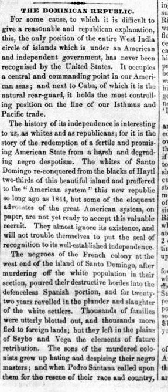
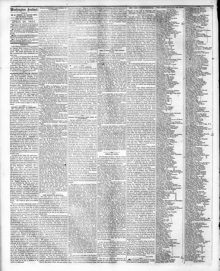

The Dominican Republic.La República Dominicana.
Washington Sentinel. Washington [D.C.], April 28, 1854. Page 2. Published by B. Tucker. A daily newspaper, 1853–1855.Washington Sentinel. Washington [D.C.], 28 de abril de 1854. Página 2. Publicado por B. Tucker. Periódico diario, 1853–1855. View the originalVer el original


See the full pageVer la página completaAn editorial in the Washington Sentinel criticizes the failure of the United States to recognize the independence of the Dominican Republic. Recounting twenty-two years of Haitian rule over the Spanish portion of the island of Santo Domingo, the paper states that the sons of the colonists in the plains of Seybo and Vega rose under Pedro Santana, fought three or four decisive battles, and drove Soulouque and his forces back to the west, where they have been kept for ten consecutive years. Having maintained the Dominican Republic under a liberal constitution, the Dominicans ask the United States for the moral aid of friendly recognition as what the paper calls the only free white self-governing American state in the West Indies. The editorial laments that after nine years this request remains unanswered, neglecting an opportunity to bring the republic into the American system as a center of resistance to the European policy of "Africanizing" the islands.Un editorial del Washington Sentinel critica la negativa de los Estados Unidos a reconocer la independencia de la República Dominicana. Al relatar veintidós años de dominio haitiano sobre la parte española de la isla de Santo Domingo, el periódico afirma que los hijos de los colonos en las llanuras de El Seibo y La Vega se levantaron bajo el mando de Pedro Santana, libraron tres o cuatro batallas decisivas y rechazaron a Soulouque y sus fuerzas hacia el oeste, donde han sido contenidos durante diez años consecutivos. Habiendo mantenido la República Dominicana bajo una constitución liberal, los dominicanos solicitan a los Estados Unidos el apoyo moral de un reconocimiento amistoso para lo que el diario denomina el único Estado americano libre, blanco y autónomo en las Antillas. El editorial lamenta que, al cabo de nueve años, esta solicitud siga sin respuesta, desaprovechando la oportunidad de integrar la república al sistema americano como núcleo de resistencia frente a la política europea de «africanizar» las islas.
FULL TEXT:TEXTO COMPLETO:
Washington Sentinel April 28, 185428 de abril de 1854
Original in English.Original en inglés.
The Dominican Republic.La República Dominicana.
For some cause, to which it is difficult to give a reasonable and republican explanation, this, the only position of the entire West India circle of islands which is under an American and independent government, has never been recognised by the United States. It occupies a central and commanding point in our American seas; and next to Cuba, of which it is the natural rear-guard, it holds the most controlling position on the line of our Isthmus and Pacific trade.Por alguna causa, a la que resulta difícil dar una explicación razonable y republicana, esta, la única posición de todo el círculo de islas de las Indias Occidentales que se halla bajo un gobierno americano e independiente, nunca ha sido reconocida por los Estados Unidos. Ocupa un punto central y dominante en nuestros mares americanos; y junto a Cuba, de la cual es la retaguardia natural, ostenta la posición de mayor control sobre la línea de nuestro comercio del Istmo y del Pacífico.
The history of its independence is interesting to us, as whites and as republicans; for it is the story of the redemption of a fertile and promising American State from a harsh and degrading negro despotism. The whites of Santo Domingo re-conquered from the blacks of Hayti two-thirds of this beautiful island and proffered to the "American system" this new republic so long ago as 1844, but some of the eloquent advocates of the great American system, on paper, are not yet ready to accept this valuable recruit. They almost ignore its existence, and will not trouble themselves to put the seal of recognition to its well-established independence.La historia de su independencia nos interesa, como blancos y como republicanos; pues es la historia de la redención de un Estado americano fértil y prometedor de un despotismo negro, duro y degradante. Los blancos de Santo Domingo reconquistaron de los negros de Haití dos tercios de esta hermosa isla y ofrecieron al «sistema americano» esta nueva república ya en 1844, pero algunos de los elocuentes defensores del gran sistema americano, sobre el papel, aún no están dispuestos a aceptar a este valioso recluta. Casi ignoran su existencia y no se molestan en estampar el sello del reconocimiento a su bien establecida independencia.
The negroes of the French colony at the west end of the island of Santo Domingo, after murdering off the white population in their section, poured their destructive hordes into the defenceless Spanish portion, and for twenty-two years revelled in the plunder and slaughter of the white settlers. Thousands of families were utterly blotted out, and thousands more fled to foreign lands; but they left in the plains of Seybo and Vega the elements of future retribution. The sons of the murdered colonists grew up hating and despising their negro masters; and when Pedro Santana called upon them for the rescue of their race and country, they rose as one man. Three or four decisive battles were fought, and Santana drove Soulouque and his black battalions back to the west, where they have now been kept for ten consecutive years. They have established and maintained the Dominican republic under a liberal constitution, and ask the United States to accord to this the only free white self-governing American State in the West India islands, the moral aid and comfort of a friendly recognition.Los negros de la colonia francesa en el extremo occidental de la isla de Santo Domingo, tras asesinar a la población blanca de su sección, volcaron sus hordas destructivas sobre la indefensa porción española y durante veintidós años se deleitaron en el saqueo y la matanza de los colonos blancos. Miles de familias fueron completamente borradas del mapa y miles más huyeron a tierras extranjeras; pero dejaron en las llanuras de Seybo y Vega los elementos de una futura retribución. Los hijos de los colonos asesinados crecieron odiando y despreciando a sus amos negros; y cuando Pedro Santana los convocó al rescate de su raza y de su patria, se levantaron como un solo hombre. Se libraron tres o cuatro batallas decisivas, y Santana hizo retroceder a Soulouque y a sus batallones negros hacia el oeste, donde ahora se les ha contenido durante diez años consecutivos. Han establecido y mantenido la república dominicana bajo una constitución liberal, y piden a los Estados Unidos que concedan a este, el único Estado americano libre, blanco y autónomo de las islas de las Indias Occidentales, la ayuda moral y el consuelo de un reconocimiento amistoso.
At the end of nine years this request still remains unanswered. To this day we have neglected to use the means thus offered to conform to the American system this additional power, and to strengthen it into a nucleus of resistance to the European policy of Africanizing those islands.Al cabo de nueve años, esta petición sigue sin respuesta. Hasta el día de hoy hemos descuidado utilizar los medios así ofrecidos para ajustar al sistema americano esta potencia adicional, y para fortalecerla como núcleo de resistencia frente a la política europea de africanizar aquellas islas.
We have diplomatic relations with distant European powers of less commercial importance to us, and of less extent than the Dominican republic, which comprises two-thirds of the magnificent island of Hayti, and with which we have such a profitable trade in mahogany, dye stuffs, cocoa, coffee, and other articles not produced in the United States.Mantenemos relaciones diplomáticas con lejanas potencias europeas de menor importancia comercial para nosotros y de menor extensión que la república dominicana, la cual abarca dos tercios de la magnífica isla de Haití, y con la que sostenemos un comercio tan provechoso en caoba, materias tintóreas, cacao, café y otros artículos no producidos en los Estados Unidos.
When our people become aware of the situation of this close and interesting neighbor to the Union, the popular sympathy will be strongly enlisted in its behalf, and the government will see the propriety, not to say necessity, of recognising the existence of this member of the American family of nations.Cuando nuestro pueblo tome conciencia de la situación de este vecino tan cercano e interesante para la Unión, la simpatía popular se inclinará fuertemente a su favor, y el gobierno verá la conveniencia, por no decir la necesidad, de reconocer la existencia de este miembro de la familia americana de naciones.